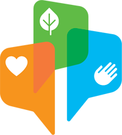

Відповідально до мети
Програма дій до 2025 року
стратегія розвитку
Стратегія сталого розвитку «Відповідально до мети»
— наше фунддаментальне переконання, що стійке
довгостровкове зростання компанії та її фінансова
успішність можуть і повинні бути нерозривно
пов'язанні з нашою відповідальністю перед
суспільством та навколишнім середовищем. Тому
принцип «Відповідальної мети» поширюється на
всі аспекти нашого бізнесу.
Ми працюемо над трансформацією продуктового
портфелю компанії, пропонуємо споживачам більше
корисних продуктів і напоїв. Pepsico забезпечує
благополуччя і процвітання регіонів, в яких ми
працюємо.
Ми впевненні, що наша праця закладає основу для
стабільного зростання компанії Pepsico і допомагає
іншим досягати успіху разом з нами.
«Я неймовірно пишаюся компанією Pepsico та її співробітниками, які щодня
втілюють у життя наш підхід «Відповідально до мети»»
Індра Нуйі
Голова Ради директорів та генеральний директор pepsico
Наші пріоритети
PepsiCo — один з найбільших у світі виробників продуктів харчування та напоїв. Тому своїми пріоритетами ми
визначаємо розширення переліку смачних, корисних і доступних продуктів повсякденного споживання.
Важливо не лише що ми виготовляємо, але і як. Ми впроваджуємо технологічні інновації та нові принципи
екологічної відповідальності заради збереження довкілля і природних ресурсів. Pepsico надає нові можливості
для всебічного розвитку наших співробітників та громад у регіонах присутності компанії.
Наші досягнення
Ми неймовірно пишаємось прогресом, якого нам вдалось досягти з моменту затвердження
стратегії сталого розвитку «Відповідальної до мети». Нижче - наші ключові досягнення з 2006 року.
Турбота про наш спільний дім
Турбота про наш спільний дім — одна із базових цінностей
PepsiCO. Задля захисту планеи ми постійно працюємо над
вдосконаленням виробничих технологій. Інновації
дозволяють ощадливо викорисовувати водні ресурси,
зменшити кількість відходів та парникових викидів.
Січень Квітень
2006 2007 2008 2009 2010 2011 2012 2013 2013 2014 2015 2016 2017 2018